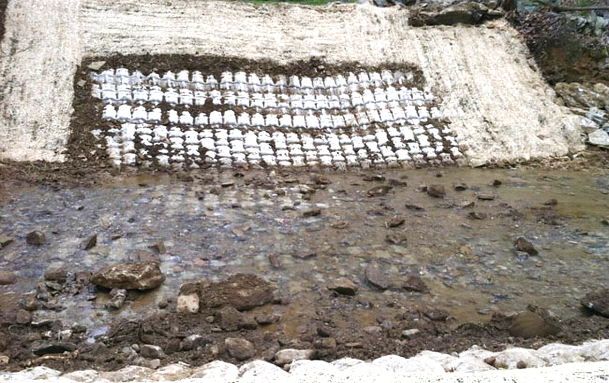

Understand the Conditions
Document the field conditions, affected assets, site geometry and signs of change.
The erosion visible at the asset is part of the problem, but the forces driving it may begin elsewhere. Er-Con evaluates both the damage and its root cause before recommending the right system or combination of systems.
Document the field conditions, affected assets, site geometry and signs of change.
Identify what is driving the problem.
Site fit. Constructability. Permitting. Asset life.
Reviewed with the customer before work begins.Develop the approved solution and prepare the project-specific system for execution.
Complete the work in the field.
Site Investigation
Every Er-Con service starts with a site investigation. Five disciplines establish what the water is doing, why, and what the ground can bear, before any system is chosen.
How much water arrives, how often and how fast: rainfall, runoff and flood flows across the watershed.
What the ground can hold: bank strength, slope stability and the foundation the solution sits on.
How the channel has moved and where it is heading: migrating bends, lowering beds, advancing headcuts.
What the water does at the site: depth, velocity, shear and scour against the bank, bed or structure.
What the water carries and leaves behind, which decides whether a bank rebuilds or keeps eroding.
Our services
Every Er-Con project runs through the same in-house teams. The work is not handed from a consultant to a supplier to a contractor, so the people who define the problem are accountable for solving it.
Every project starts here. Hydrology, soil mechanics, geomorphology, hydraulics and sedimentology together establish the forces acting on the site, so our engineers can separate the visible symptom from the underlying problem.
From that foundation, we define the problem, the assets at risk and the boundaries of the work. The team evaluates alternatives and establishes a clear, defensible path forward.
Er-Con engineers translate field conditions into practical, site-specific engineering and construction documents. Each drawing accounts for constructability and long-term performance.
Permitting extends beyond environmental review to floodplain and other site-specific requirements. Er-Con prepares and submits applications, coordinates with agencies and sees every required permit through review and approval before work moves into the field.
In the field, Operations coordinates local vendors and suppliers while managing safety, quality and changing site conditions. When challenges arise, crews make informed field adjustments without compromising the intent of the design.
The result is a site-specific solution that addresses the forces behind the problem, stabilizes the site and protects critical assets for years to come.
The systems behind our services
Er-Con selects the right system and engineers a solution based upon the asset at risk and the forces acting on the site.
River Training
A patented system that redirects high-velocity and turbulent flow away from threatened banks while encouraging natural accretion and habitat recovery.
 View Palisade →
View Palisade →
Bank Stabilization
A connected concrete protection system designed for steep grades, head cuts and conditions where rigid structures may be vulnerable to movement or separation.
 View FCR →
View FCR →
Articulating Grout Mat
Custom-fabricated, cable-reinforced concrete mattresses that conform to the site and resist bed degradation, bank erosion and erosive forces.
 View Ercoform →
View Ercoform →
Revegetated Protection
An open-cell articulating mat that supports natural vegetation while providing protection against periodic high-flow events.
 View Eco-Flex →
View Eco-Flex →
Integrated Coverage
A combined approach using Ercoform for high-strength bed protection and Eco-Flex along banks where revegetation is appropriate.

View System 21 →Exposed Infrastructure
Standard and high-strength support systems for exposed or suspended pipelines where conventional cover is impractical or immediate stabilization is needed.
 View Pipeline Supports →
View Pipeline Supports →
Additional capabilities
For moderate- and low-velocity flow conditions where reinforced vegetation can provide effective protection.
High-tensile geogrid systems used within engineered fill to reconstruct and reinforce unstable slopes.
After Before
BeforeExposures, free spans, loss of cover, bank retreat into the right-of-way.
 After
After Before
BeforeRail, highway, bridges. Bridge scour, failing embankments, culvert outlets, roadside channels.
 After
After Before
BeforeStormwater channels, outfalls, creek banks failing near roads and parks.
 After
After Before
BeforePower, water, wastewater. Exposed crossings, threatened structures, washed-out rights-of-way.
 After
After Before
BeforeWaterfront, lakes and ponds, drainage through developed land.
Not sure where you fit?
Send us the location and what concerns you. We'll help determine the right path forward.
What are you seeing in the field?
Tell us what is happening at the site, what concerns you and the assets you’re trying to protect. We’ll help determine the right path forward.